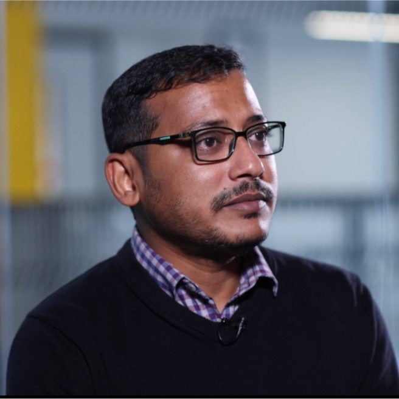

Dr. Jajati Mandal
University Fellow
University of Salford; Salford, United Kingdom
Jajati, an environmental soil chemist and University Fellow at the University of Salford, specializes in researching environmental contaminants' impacts, particularly metal(loid)s, PFAS, and tyre rubber chemicals in agricultural systems. He leads multidisciplinary teams in assessing, remediating, and managing these contaminants,
employing analytical techniques for metals and metalloids in diverse environmental samples.

Sandipan Samanta
Data Science Specialist, Team Leader
TDK Management GmbH, Düsseldorf, Germany
Sandipan has extensive knowledge of advanced statistical analysis, predictive modeling, forecasting, machine learning, AI, CyberSecurity and Cloud Computing in Big Data environments. He advocates for developing end-to-end scalable web applications that deliver tangible value, rather than merely conducting proof of concepts (POCs) that may falter during real-world implementation.